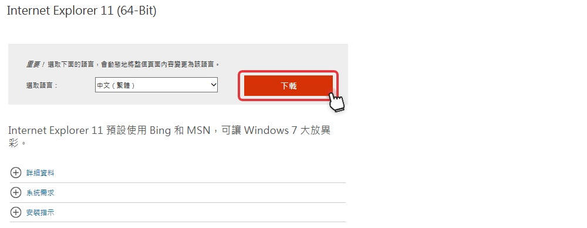

- 時間有彈性：不受銀行營業時間的限制，而且免排隊、免出門、免塞車。
- 沒有地域性：只要是可上網的地方就可做交易，銀行就在您的電腦裡面。
- 功能多元化：買賣基金、辦定存、轉換外幣存款、匯款轉帳，樣樣都行。
- 自主性理財：隨時可查詢帳戶即時資料及市場脈動，主動掌握理財契機。
- 快速又安全：交易在層層安控系統把關下瞬間完成，輕鬆簡單又可放心。
- 轉帳交易類
- 存款查詢類
- 綜存及定存理財類
- 投資理財產品類
- 海外股票/ETF類
- 黃金存摺類
- 貸款服務類
- 進出口查詢類
- 信用卡服務類
- 其他服務類
- 金融理財資訊類
- 網路銀行功能眾多，完整功能說明歡迎參考 網路銀行服務功能介紹
網路銀行提供的服務如果依使用密碼分類，可分為三類：
- 一般查詢：例如匯、利率、基金淨值查詢，及基金、貸款試算等，不用申請，可以直接點選使用。
- 帳務服務：例如各種帳務查詢、台外幣轉帳、服務申請、基金下單、外匯、信用卡、貸款、企業戶進出口查詢等各式各樣全方位的網路銀行服務，只要您擁有上海銀行新台幣活期、活期儲蓄、支票、綜合存款或SMA存款等任何一種活期性存款帳戶，即可攜帶身分證（企業戶需要公司大小章及負責人親簽）親至國內任一分行申請網路銀行密碼，使用您專屬的網路帳戶服務（若您持有本行晶片金融卡，也可在網銀登入畫面點選『晶片卡申請網銀』線上新申請網銀服務，申請成功後即可使用網銀各項查詢、及約定類服務）。
- 信用卡服務：如果您擁有上海銀行的信用卡，但尚未在本行開立新台幣存款帳戶，您也可以在線上申請信用卡網路服務密碼。
建議您，只要您擁有上海銀行新台幣活期性存款帳戶，且已申請網路銀行及基金下單服務，於取得密碼後，經由網路銀行簽入成功後，您不但可查詢信用卡的帳單，同時可享有轉帳、基金下單等多樣化線上理財服務，歡迎您攜帶身分證、印章親至各地分行辦理開戶並同時申請網路銀行服務。
- 為保障您的權益，申請網路銀行帳務查詢或轉帳服務，必須請您攜帶身分證（企業戶需要公司大小章及負責人親簽）親至國內任一分行填寫申請書（若要辦理轉帳者亦須請在申請書上約定轉帳帳號、限額），並向分行領取一份「網路銀行業務」密碼通知書；申請完成後，即可上網使用該密碼通知書進入網路銀行（詳細說明請參考系統登入問題Q1）。提醒您：密碼通知書請於申請日起30日內使用，逾期則須重新辦理申請。
- 若您持有本行晶片金融卡，也可在網銀登入畫面點選『晶片卡申請網銀』線上新申請網銀服務，申請成功後即可使用網銀各項查詢、及約定類服務。
網路銀行提供的服務如果依使用密碼分類，可分為三類：
- 第一次簽入網路銀行時，請使用您於櫃台領取的「網路銀行業務」密碼通知書，並在網路銀行簽入頁面輸入以下資料：
【身分證/統一編號】：請輸入您的身分證號或公司的統一編號
【使用者代號】：請輸入「網路銀行業務密碼通知書」上的序號（共8碼）
輸入身分證/統一編號和使用者代號完成第一段登入後，網頁上會顯示您的戶名和您留存於本行的E-mail信箱，以便您核對確認為本行網站無誤後，再請輸入您手邊「網路銀行業務密碼通知書」裡面的密碼（共6碼）。
- 待簽入成功後，系統會引導您進一步設定【使用者代號】及新密碼。
可以，只要您擁有上海銀行新台幣活期性存款帳戶，都可以申請網路銀行服務。申請人如為未成年，則須比照存款開戶程序，無行為能力人，由法定代理人代為辦理申請，限制行為能力人則應獲得法定代理人之同意。
為保障存款人的權益、確保帳戶的安全，網路銀行帳務服務密碼須請本人攜帶身分證（企業戶需要公司大小章及負責人親簽）親至國內任一分行辦理；若您持有本行晶片金融卡（或本行信用卡），也可在網銀登入畫面點選『晶片卡申請網銀』（或『申請信用卡網銀密碼』線上新申請網銀服務，申請成功後即可使用網銀各項查詢、及約定類服務。
申請新增網路銀行轉出或轉入約定帳號時，仍請您攜帶身分證（企業戶需要公司大小章及負責人親簽）親至國內任一分行，於申請書上約定新增帳號、限額等事項，新增加的轉出約定帳號於申請後可立即使用，新增加的轉入約定帳號則於申請後次日啟用。
上海銀行網路銀行系統是全年無休，24小時開放，但部份服務項目因配合銀行內部作業而有服務時間的限制：
- 台幣轉帳交易類：24小時全天候服務。
- 外幣轉帳交易類：服務時間為銀行營業日09:00am~15:30pm。
- 外匯及進出口查詢類：24小時全天候服務；惟如遇主機抄檔時段，將暫停提供服務。
- 台幣貸款類：服務時間為銀行營業日09:00am~18:00pm。
- 台幣綜存及定存類：24小時全天候服務；惟如遇主機抄檔時段，交易及約定功能將暫停服務（查詢功能照常服務）。
- 共同基金類：因系統於每日曆日上午05:30~上午06:40及營業日下午03:15~下午05:00進行系統轉換而暫時停止提供服務(但贖回交易於前述營業日期間內不受限制)，其他時間均照常服務。但外幣信託單筆投資服務時間為銀行營業日上午09:00~下午03:15，外幣信託定期定額約定/修改/回贖除上述兩時段暫停服務，另於營業日20：10-21：10因系統進行轉換而暫時停止提供服務，其他時間均照常服務。
- 信用卡類：24小時全天候服務；但系統須不定時進行轉檔作業，若發生系統無法正常服務時，請您稍後再試，或電洽本行客戶服務中心。
- 使用網路銀行各種帳戶查詢、服務申請或上海銀行各帳戶間的轉帳、繳款，目前均不收取任何費用。
- 使用網路銀行跨行轉帳，每筆手續費新台幣15元將直接與轉帳金額一起由轉出的帳戶中扣帳，比您在櫃台辦理匯款手續更便利、費用更優惠。（註：親臨銀行櫃台跨行匯款每筆手續費新台幣30元；使用自動提款機（ATM）或電話語音跨行轉帳每筆均為新台幣15元。
- 基金下單享有網路銀行基金優惠手續費，於單筆購買或分期定額扣帳時，連同購買基金金額由您指定的帳戶中扣帳，讓您輕鬆理財，同時我們不斷推出各種基金優惠活動，最新優惠訊息請隨時參考 http://fund.scsb.com.tw/ ，基金相關說明請參考基金篇。
- 網路銀行以新台幣結購外匯，或將外匯存款結售為新台幣，不但沒有任何費用，並可享有匯率的優惠，讓您賺得更多。
- 約定帳號轉帳：轉出帳號和轉入帳號都須事先約定，請您攜帶身分證（企業戶需要公司大小章及負責人親簽）親至國內任一分行於申請書上約定轉帳帳號及限額。
- 非約定帳號轉帳：轉出帳號及限額必須事先親至國內任一分行於申請書上約定，並啟用非約定轉帳功能後即可隨時使用網銀轉入任何未事先約定的臺幣帳號（您也可持本行晶片金融卡利用網銀『非約定帳號轉帳功能啟用/註銷』功能啟用非約定轉帳的權限）。
您約定的本人（企業戶為同一公司）各個帳戶間以相同幣別轉帳時，例如新台幣帳戶互轉、美金帳戶互轉等，沒有單筆轉帳或累計轉帳金額的限制。其他各類轉帳限額如下：
- 新台幣約定帳號轉帳－台幣約定帳號轉帳、預約轉帳：轉入他人在本行的台幣帳戶時，每筆轉帳金額不得超過二佰萬元，每日曆日合計本行轉帳之轉出限額最高可約定為二仟萬元；轉入他行帳戶時，每筆轉帳金額不得超過二佰萬元，每日曆日合計跨行轉帳之轉出限額最高可約定為三佰萬元。以上限額是由網路銀行及電話轉帳合計共用一限額。
- 台外幣約定帳號間轉帳－外幣轉台幣帳戶、台幣轉外幣帳戶：新台幣與外幣約定帳戶間之相互轉帳（結購或結售外匯存款），必須為本人（企業戶為同一公司）的帳戶，每人每日累計新台幣轉外幣或外幣轉新台幣之限額各為新台幣五十萬元以內。
- 外幣約定帳號轉帳－外幣轉外幣帳戶：外幣轉外幣帳戶必須為相同幣別，如轉入已約定其他人在本行的外幣帳戶，每一帳戶每營業日轉出限額最高可約定為等值美金十萬元。
網路銀行提供的服務如果依使用密碼分類，可分為三類：
- 第一次簽入網路銀行時，請使用您於櫃台領取的「網路銀行業務」密碼通知書，並在網路銀行簽入頁面輸入以下資料：
【身分證/統一編號】：請輸入您的身分證號或公司的統一編號
【使用者代號】：請輸入「網路銀行業務密碼通知書」上的序號（共8碼）
輸入身分證/統一編號和使用者代號完成第一段登入後，網頁上會顯示您的戶名和您留存於本行的E-mail信箱，以便您核對確認為本行網站無誤後，再請輸入您手邊「網路銀行業務密碼通知書」裡面的密碼（共6碼）。
- 待簽入成功後，系統會引導您進一步設定【使用者代號】及新密碼（詳細設定說明請參考Q3）。
- 本行網路銀行採用單一簽入整合（Single Sign-On），因此網路銀行用戶不論是個人或是企業，簽入的使用者代號及密碼只有一組，若持有本行信用卡，亦不需另外申請信用卡服務密碼，就可以使用信用卡類的網銀服務，不須另外記一組信用卡服務密碼；提醒您，若您先前已申請信用卡網銀服務密碼且已於任一分行申請網銀密碼者，簽入網路銀行時須請您使用存款戶的網銀密碼，不可再使用信用卡網銀密碼，以免發生密碼輸入錯誤的情形。尚未成為本行存戶且臨櫃申請網銀服務的本行信用卡持卡人，方可線上申請及使用信用卡網銀服務密碼。
- 欲簽入網路銀行，請從本行網站點選「網路銀行」，簽入時請注意使用者代號及密碼若包含英文字母時則有大小寫之分，請務必先確認。
設定使用者代號及密碼時請留意網頁上的設定規則說明，主要設定規則如下--
- 使用者代號須為6~12位的英文字、數字或英文數字混合，不得為連續數字，或相同的英文字母或數字，亦不得與您的密碼、身分證號或統一編號相同。
- 密碼須為8~12位的英文及數字混合，至少應包含1個英文字母，不得為相同的英文字母，亦不得與您的使用者代號、身分證號或統一編號相同。
- 英文字母有大小寫之分，輸入時請務必先確認以免有誤。
- 請盡量避免使用您的英文名字、生日、電話號碼。
- 使用者代號提示語：為避免您遺忘使用者代號以致無法簽入網銀，請於【代號提示語】欄內輸入適當的提示文字， 例如：若您以車牌號碼AB1234作為使用者代號，則【代號提示語】可以填入："我的車牌號碼大寫"； 日後若您遺忘使用者代號時，可在簽入畫面點選"忘記代號"，本行就會依據您所留的E-Mail信箱， 將代號提示語（本例為：我的車牌號碼大寫）E- Mail 給您!!因此提醒您，代號提示語應儘可能設為方便您聯想到您的使用者代號，並請確認已將您目前正確的E-mail信箱留存於本行。
設定成功後系統會要求您使用【使用者代號】及新密碼重新簽入，再度簽入網路銀行時請使用此【使用者代號】及新密碼。您也可以隨時簽入網路銀行點選「代號及密碼變更」功能，重新設定您的使用者代號、代號提示語及密碼。
建議您：密碼宜定期更新，並請避免於公共場所利用他人的電腦使用網路銀行，以保護您密碼資料的安全。
遺忘使用者代號時，請於網路銀行簽入畫面，點選確定簽入按鈕旁邊的「忘記使用者代號」；進入忘記使用者代號的查詢畫面後，請輸入您的身分證號或統一編號再按「確定送出」鈕，系統就會將您的代號提示語傳送到您先前留存於本行的E-mail信箱。
若您尚未於本行留存您的E-mail信箱，或所留存的E-mail信箱有誤，致無法收到代號提示語時，請親洽開戶分行更新您的E-mail信箱後，次日再重新查詢代號提示語。
若您於查閱代號提示語後仍遺忘「使用者代號」者，須請您攜帶身分證（企業戶需要公司大小章及負責人親簽）親自到任一分行重新申請一份「網路銀行業務」密碼通知書，再參考Q1簽入網路銀行後，重新設定使用者代號、代號提示語及新密碼。
在第二段登入畫面中的圖形驗證碼，若您按下『重新產生』鈕後，仍未出現新的圖形驗證碼時，請參考以下的步驟更改您的瀏覽器設定。
- 請點選IE瀏覽器「工具」>>「網際網路選項」
- 在「一般」頁籤點選「設定」
- 「Temporary Internet files」勾選「每次造訪網頁時」，再按『確定』
- 回到「一般」頁籤後，再按一次『確定』
- 請關閉瀏覽器後，再重新啟動瀏覽器試試看。
可能是IE瀏覽器編碼設定的問題。請選取IE瀏覽器上面的「檢視」->「編碼」，勾選「自動選取」及「Unicode」； 設定完成後請關閉視窗，再重新進入「網路銀行」；若仍有問題，請參考 Q6 清除暫存網頁。
請參考以下的步驟調整IE瀏覽器的設定--
- 請點選IE瀏覽器「工具」>>「網際網路選項」，再選擇「進階」標籤；
- 在進階設定的選項裡面，請在「安全性」項目中勾選【使用TLS 1.0】，再按「確定」鈕。
- 請參考Q6，清除暫存網頁。
- 完成後，請關閉所有的瀏覽器，再重新啟動瀏覽器試試看。
請參考以下的步驟更新您的IE瀏覽器版本--
- 請到Microsoft台灣微軟公司網站的下載中心>「熱門下載類別」>>點選「瀏覽器」
- 從下載項目中，選擇 "檢視更多 "
- 點選左側類別「支援」
- 選擇「Internet Explorer下載」
- 選擇「下載Internet Explorer 11」，依電腦系統選擇32位元或64位
- 進入" Internet Explorer11 "下載說明的網頁後，用滑鼠點選「下載」鈕

- 檔案下載時，請選擇「執行」
- 檔案下載時，請選擇「安裝」(Install)；然後依照畫面指示即可完成下載，下載後請重新開機。
- 重新開機後，請試試看是否已可進入網路銀行，若仍無法顯示網頁，請參考 Q4 檢查您的Windows版本。
請參考以下的步驟檢查您的Windows版本--
- 請到電腦的桌面，點選「我的電腦」 再按滑鼠右鍵，從出現的選單中選擇「內容」
- 彈出畫面上方「檢視電腦的基本資訊」可看到是否為Windows 7，若是Windows 7但Service Pack的版本尚未更新為第1版以上者，須請參考 Q5 更新您的Windows版本。
請參考以下的步驟更新您的Windows版本--
- 請參考 Q4 (1)點選「內容」>>選擇「Windows Update」
- 進入Windows Update，用滑鼠點選「 從線上檢查來自Windows Update的更新」
- 再用滑鼠點選「安裝更新 」，接下來只要依照畫面指示操作即可完成更新Windows 7的版本。
請參考以下的步驟，先清除您電腦中的瀏覽歷程記錄、設定永遠較新版本、及取消自動完成設定--
- 請點選IE瀏覽器「工具」>>「網際網路選項」
- 首先，先清除瀏覽歷程記錄。請在「一般」標籤裡的【瀏覽歷程記錄】勾選【結束時刪除瀏覽記錄】再按「刪除」鈕

- 勾選【網際網路暫存檔】、【Cookie】、【歷程記錄】、【表單資料】、【密碼】等，再按下方的「刪除」鈕
- 接著，設定永遠較新版本。請回到「一般」標籤後，點選【瀏覽歷程記錄】的「設定」鈕
- 勾選【每次造訪網頁時】，再按「確定」鈕
- 接下來，取消自動完成設定。請進入「內容」標籤後，在【自動完成】按下「設定」鈕
- 接請取消勾選【表單上的使用者名稱和密碼】，再按「確定」鈕
- 回到「內容」標籤後，再按下方的「確定」鈕；完成後，請關閉所有的瀏覽器，再重新啟動瀏覽器試試看
請參考以下的步驟檢查及移除電腦中的Proxy設定--
- 請點選IE瀏覽器「工具」>>「網際網路選項」
- 請選擇「連線」標籤後，再點選「LAN設定」鈕
- 不要勾選「在您的區域網路使用Proxy伺服器」，再按「確定」鈕
- 回到「連線」標籤後，再按一次「確定」鈕；完成設定。
可能是銀行的電腦系統在同一時間內處理的作業量較大，請您稍後再查詢相關的資料， 如果一直出現同樣的訊息，請您通知本行客戶服務中心為您服務。
可能是電腦中的暫存網頁未更新，請參考【網頁顯示問題】Q6，清除暫存網頁。清除暫存網頁後如果仍有問題，請您通知本行客戶服務中心為您服務。
請參考以下的步驟，先清除您電腦中的瀏覽歷程記錄、設定永遠較新版本、及取消自動完成設定--
- 請點選IE瀏覽器「工具」>>「網際網路選項」
- 首先，先清除瀏覽歷程記錄。請在「一般」標籤裡的【瀏覽歷程記錄】勾選【結束時刪除瀏覽記錄】再按「刪除」鈕
- 勾選【網際網路暫存檔】、【Cookie】、【歷程記錄】、【表單資料】、【密碼】等，再按下方的「刪除」鈕
- 接著，設定永遠較新版本。請回到「一般」標籤後，點選【瀏覽歷程記錄】的「設定」鈕
- 勾選【每次造訪網頁時】，再按「確定」鈕
- 接下來，取消自動完成設定。請進入「內容」標籤後，在【自動完成】按下「設定」鈕
- 接請取消勾選【表單上的使用者名稱和密碼】，再按「確定」鈕
- 回到「內容」標籤後，再按下方的「確定」鈕；完成後，請關閉所有的瀏覽器，再重新啟動瀏覽器試試看
可能是申請時，沒有約定轉入帳號。請您攜帶身分證（企業戶需要公司大小章及負責人親簽）親至任一分行，於申請書上約定轉入帳號（約定帳號最多可有28個帳號）；約定完成後即可上網簽入網路銀行進行轉帳。
建議您從本行網站首頁 " 網路銀行 "進入，本行為有效防範假網站騙取您的密碼，網路銀行服務系統採取兩段式登入作業：
- 第一段登入：請輸入您的身分證/統一編號和使用者代號。
- 第二段登入：請核對網頁上顯示的戶名和E-mail，確認為您的個人資料，證實為本行網站後再輸入您的網路密碼。
為防範不法份子冒用本行名義發送電子郵件（或網路釣魚Phishing）、拷貝本行網站，或使用相似的網站名稱或網址，誤導客戶進入假網站，藉以騙取客戶的身分證號及密碼等重要個人資料，提醒您：請務必確認所連結的是否為本行網站。
本行網址為 www.scsb.com.tw
建議從 " 我的最愛 " 連結本行網站，避免進入假網站：請將本行網站加入 " 我的最愛 " ，任何時候要連結本行網站時，直接從 " 我的最愛 " 連結進入本行網站，不要從網路上搜尋本行網址，就可減少上錯假網站的風險。
加入 " 我的最愛 " 的步驟：
- 先確認您目前所在的網址為www.scsb.com.tw，若有任何差異（包括多了或少了任一文數字或符號）就不是本行網站。
- 用滑鼠點選網頁上方的 " 我的最愛 " >> " 加到我的最愛 " ，完成設定後，以後要連結本行網站時，只要從 " 我的最愛 " 裡面，選擇 " 上海商業儲蓄銀行 " ，就可以正確的連結到本行網站首頁了。
建議您養成以下良好的密碼使用習慣--
- 任何密碼（如語音密碼、金融卡密碼、網路銀行密碼等等）都不要告知他人，尤其要防範詐騙集團套問您的個人資料。
- 設定密碼時，不要使用生日、電話、身份證號等容易被有心人猜到的數字，也不要將密碼設為連號或是重號。
- 如果可以的話，最好能夠不定時變更密碼。
- 使用電腦時，不要讓瀏覽器記下個人密碼、身分證號或帳號等資料。
- 輸入密碼時注意不要被周遭他人窺視。
- 不要在網路咖啡之類的公共場所使用有交易功能的網站。
- 您在一般網站使用的密碼，最好和網路銀行的密碼有所區分，以免被人猜中或盜用。
- 請避免經由無線上網使用網路銀行服務。
請確認您的電腦安全防護：
- 建議您安裝防毒軟體，並定期更新病毒碼。
- 建議您經常更新Windows最新的安全套件或增修版本。
- 避免開啟來歷不明的檔案或可疑的電子郵件。
離開座位前或交易完畢應立刻登出或關閉瀏覽器：
為了預防您離開電腦太久而遭他人竊用，系統會在您逾五分鐘未做任何交易時，自動執行簽出。建議您，如果要離開網路銀行時，請務必執行簽出，以保障您的權益及帳戶安全。
本行網路銀行經財政部核准，安全控管機制完全符合中華民國銀行公會「金融機構辦理電子銀行業務安全控管作業基準」的規範，以確保網路交易的安全及客戶資料隱密性保護。對於客戶關心的「駭客入侵」責任，則由本行負擔其危險，請您安心使用。為了充分保障您的權益，請您詳閱本【用戶安全須知】，確保您在安全的環境下使用本行快速便利的網路銀行服務。
請您儘量避免在公共場所上網使用網路銀行服務，尤其不要在網路咖啡廳使用您的個人密碼，以免您的個人資料遭人偷窺或盜用密碼。如果您使用的不是自己家裡的個人電腦，請特別注意瀏覽器具有回到上一頁的特性，為了避免旁邊有人偷窺您查詢過後的資料，請於簽退網路銀行後，記得關閉瀏覽器，而且最好清除瀏覽器上所有的瀏覽紀錄。
本行網路銀行採用256位元之SSL通訊安全保密機制，交易資料在傳輸時都經過亂碼化及加密處理，請您放心。
HTTP和HTTPS的不同在於HTTPS有加密保護功能，而HTTP則無加密保護功能。當您上網登入上海銀行網路銀行https://ibank.scsb.com.tw 後，即有加密保護功能。
任何對於本行網路銀行服務之改善建議或申訴，請致電本行電話客服中心0800-003111或(02)2552-3111由專人為您服務，或請E-mail至本行客服信箱：service@scsb.com.tw。
網路安全提醒--
- 請確認網站與手機應用程式正確性。
- 請妥善保管使用者代號、密碼並提高警覺勿交付給第三人或其他非授權網站。
- 請於輸入密碼時，提高警覺避免旁人窺視。
- 請經常變更密碼且勿與其他應用系統及服務密碼共用。
- 請勿點選來路不明網址及程式並建議安裝防毒軟體。
- 請勿書寫密碼於金融卡或其他明顯且他人可取得處。
- 請勿記錄密碼於電腦或行動裝置內。
- 請勿透過未加密機制傳送密碼。